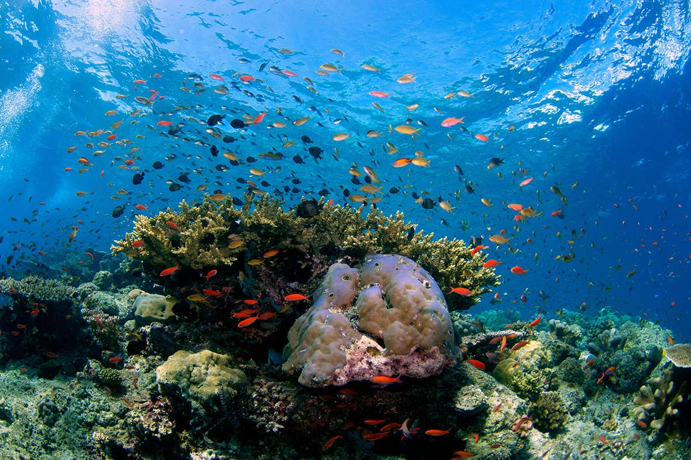
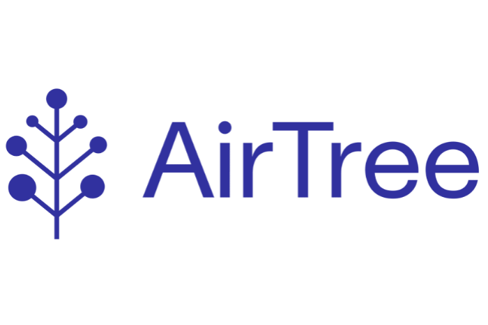

Blackbird Ventures: Phoebe Harrop
In this episode, we sat down with the brilliant Phoebe Harrop from Blackbird, a venture capital fund based in Australia and New Zealand. Blackbird invests in every type of technology from software to space, unified by the biggest of ambitions. In this edited conversation, we spoke about perspectives on climate-tech, Phoebe's journey into the space, and lessons learned through investing in climate start-ups.
How did you get involved with Blackbird and when did you start working on climate-tech?
It probably all started in 2005 when “An Inconvenient Truth” came out. That film sparked my interest in the climate crisis and fostered my desire to work on environmental topics. I sought to pursue this passion by studying law, but after a while I noticed most positive environmental impact was being made in the private sector and business. It seemed to me that by controlling the capital, you could control the outcomes. As a result, I joined Bain where I learned how organisations tick.
During my time at Bain, I did some volunteer work for Impact Investing Australia which was quite pivotal for me. Hearing their CEO discuss how to align non-financial goals with finance resonated strongly. Following some additional investment advisory work in London, I decided to join Generation, Al Gore's investment fund. At Generation we invested in innovative business models and technologies seeking to reduce greenhouse gas emissions, and it was a real privilege to spend time there.
Eventually, I decided to return to New Zealand and build my career here. Blackbird is one of the only funds in New Zealand which allows me to invest in wacky but awesome science-fiction-type companies. It also has a unique approach to working with founders, and there's nowhere else I'd want to work.
What lessons can you take away from your climate-tech investments so far?
In the case of deep engineering start-ups, teams risk spending too much time on product, and not enough time on understanding the market. My main advice to founders is that they get obsessed with solving their customer's problems.

Furthermore, a big challenge early-stage founders and investors face relates to patient capital. Namely, how can teams access patient capital through the growth journey. It's a big challenge to buy enough time and runway to protect start-ups for when things inevitably go wrong. The journey is very difficult and encouraging patience from later stage investors is crucial.
At the moment, there's an abundance of capital in climate-tech which allows these companies to reach their full potential. However, eventually we might see a downturn and that could be a real challenge.
What solutions will present themselves in order to address patient capital?
It will be interesting to see what concessionary capital flows into the space, particularly from governments who've made net zero commitments.
For example, in the case of hydrogen generation, most people think the downward cost curve will be insufficient unless we're at marginal cost renewable energy. To get there requires government involvement because private companies won't compete to the point of zero cost renewables, they would never be incentivized to do that.
As a result, to what extent will governments reduce the cost of renewable energy? That's an interesting topic.
A second solution will come from big investors underlying VC funds similar to Blackbird. Examples include pension funds, superannuation funds, and sovereign wealth funds, who are all under immense scrutiny relating to where their money is ending up. Potentially up to 90% of these megafunds haven't allocated their money with ESG in mind. As a result, plenty of capital might come chasing after green opportunities. I'm quite hopeful that it will.

What's next for you and Blackbird in terms of climate-tech investing?
Climate-tech is emerging as a significant part of our portfolio. We continually meet more founders working on climate problems, because they are the most significant, interesting, and meaningful opportunities of our time. As a result, we'll continue to back founders doing their life's work in this space, without premeditating too much about our preferred technologies or industries. We'll continue to look for customer obsession, sparkling product roadmaps and founders that are committed to building businesses. The space is growing, and the maturity level, experience and number of people involved in climate-tech is really gathering momentum. It's very exciting.
What advice might you give to someone starting out on their climate-tech journey?
Thanks to podcasts, substacks and blogs, you can hear from so many amazing people on climate. I would definitely encourage people to get stuck into these resources such as "The Interchange Podcast" amd "Rethinkx". It's also important to foster a healthy level of scepticism, seek fundamentals, and consider how different businesses in the space will scale.
Are there any books that you've found particularly useful in your journey that you might recommend to someone else?
Vaclav Smil is one of the best writers about energy systems and why energy, as the great enabler, matters. I would recommend his book "energy and civilisation" as a starting point.

AirTree Ventures site
Interviewer: Peter Green
Share this:
Tweet